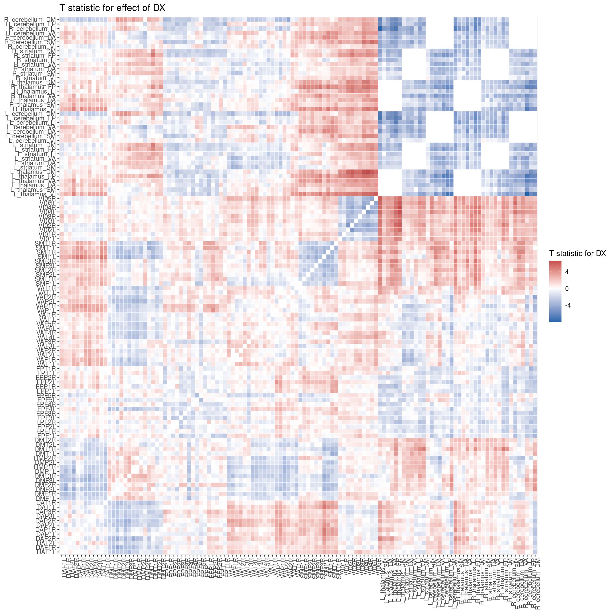
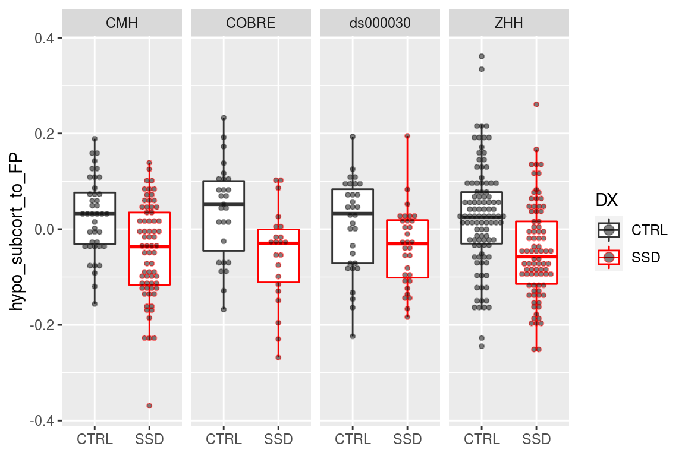

Chapter 9 Code for reading in all the timeseries..
A table that describes the current expected subortical files
These functions are for reading timeseries files
This reads all files and generate PINT to subcortical correlation values for a given subject
the_subcortical_guide <- get_subcortical_guide()## Warning: `cols` is now required when using unnest().
## Please use `cols = c(subcort_NET)`## Parsed with column specification:
## cols(
## subcort_hemi = col_character(),
## subcort_ROI = col_character(),
## numvx = col_double(),
## network = col_character()
## )#run_read_subject_subcort_corrs(subcort_outputlist$subid[1])9.1 This was run once in order to detemine the too small subcortical ROIs
read_vx_count <- function(filepath) {
read_csv(filepath, col_names = FALSE) %>%
mutate(network = c('VI','SM','DA','VA', 'LI','FP','DM'))
}
vx_counts <- the_subcortical_guide %>%
select(subcort_hemi, subcort_ROI) %>%
distinct() %>%
mutate(vx_count = str_c(output_base,'/ZHH/out/ciftify_meants/templates/7RSN_roi-',subcort_hemi, subcort_ROI,'_vxcount.txt')) %>%
mutate(vxnum = map(vx_count, ~read_vx_count(.x))) %>%
unnest() %>%
select(subcort_hemi, subcort_ROI, X1, network) %>%
rename(numvx = X1)
write_csv(vx_counts, '../templates/subcort_vxcounts.csv')node_annotations <- get_node_annotations(Yeo7_2011_80verts, the_subcortical_guide)9.1.1 This reads all the subcortical files it can find
Write a func_base and outputprefix cols into the pheno file for the file reading step
source(here('code/R/file_reading_helpers.R'))
pheno <- pheno %>%
mutate(func_base = get_func_base_from_pint_summary_filename(filename,subject, session),
outputprefix = construct_output_prefix(subject, session, func_base))
map2(pheno$outputprefix[1], pheno$dataset[1],
~run_read_all_subject_timeseries_and_wholebrain_corZ(.x, .y))source(here('code/R/file_reading_helpers.R'))
pheno <- pheno %>%
mutate(func_base = get_func_base_from_pint_summary_filename(filename,subject, session),
outputprefix = construct_output_prefix(subject, session, func_base))
all_corZ_results <- pheno %>%
select(subject, outputprefix, dataset) %>%
mutate(the_corrs = map2(.$outputprefix, .$dataset,
~run_read_all_subject_timeseries_and_wholebrain_corZ(.x, .y)))
#save(all_corZ_results, file = file.path(output_base, "all_clinicalplusqa_group", "Rdata_cache", "06_wholebrain_results_cache.Rdata"))
saveRDS(all_corZ_results, file = file.path(output_base, "all_clinicalplusqa_group", "Rdata_cache", "06_wholebrain_FC_cache.rds"))load(file.path(output_base, "all_clinicalplusqa_group", "Rdata_cache", "06_wholebrain_results_cache.Rdata"))all_corZ_results <- readRDS(file = file.path(output_base, "all_clinicalplusqa_group", "Rdata_cache", "06_wholebrain_FC_cache.rds"))9.1.2 merge with the phenotypic data
results_pheno <- all_corZ_results %>%
inner_join(pheno, by = c("subject", "dataset")) %>%
unnest(cols = c(the_corrs)) results_pheno9.2 calcualate cohen's D for Diagnosis Effect
library(modelr)##
## Attaching package: 'modelr'## The following object is masked from 'package:igraph':
##
## permute## The following object is masked from 'package:broom':
##
## bootstraplibrary(effsize)
calc_DX_cohenD <- function(df, outcome, predictor, covars) {
m1 <- lm(formula(paste(outcome, '~', paste(covars, collapse = " + "))),
data = df)
result <-df %>%
add_residuals(m1) %>%
cohen.d(formula(paste("resid ~", predictor)), data = .) %>%
.$estimate
return(result)
}rm(all_corZ_results)results_pheno_plus_DXd <- function(results_pheno) {
results_pheno %>%
semi_join(node_annotations, by = c("to"="node_name")) %>%
semi_join(node_annotations, by = c("from"="node_name")) %>%
mutate(corZ = weight) %>%
group_by(vertex_type, to, from) %>%
nest() %>%
#slice(1:3) %>%
mutate(DX_cohenD = map(data, ~calc_DX_cohenD(.x,
outcome = "corZ",
predictor = "DX",
covars = lm_covar_cols))) %>%
unnest(DX_cohenD) %>%
ungroup() %>%
select(vertex_type, to, from, DX_cohenD)
}
## had to split this by vertex because of RAM issues on laptop
pvertex_DXd <- results_pheno %>%
filter(vertex_type == "pvertex") %>%
results_pheno_plus_DXd()
tvertex_DXd <- results_pheno %>%
filter(vertex_type == "tvertex") %>%
results_pheno_plus_DXd()
tvolume_DXd <- results_pheno %>%
filter(vertex_type == "tvolume") %>%
results_pheno_plus_DXd()
DX_cohensD_results <- bind_rows(
pvertex_DXd,
tvertex_DXd,
tvolume_DXd
) DX_lm_formula <- formula(paste("corZ ~ ", lm_predictor_col, "+",
paste(lm_covar_cols, collapse = " + ")))
print(str_glue("fitting: lm formula {DX_lm_formula}"))## fitting: lm formula ~
## fitting: lm formula corZ
## fitting: lm formula DX + Age_match_pt + Sex + fd_mean_match_pt + SiteDX_lm_model_fit <- function(results_pheno) {
results_pheno %>%
semi_join(node_annotations, by = c("to"="node_name")) %>%
semi_join(node_annotations, by = c("from"="node_name")) %>%
mutate(corZ = weight) %>%
group_by(vertex_type, to, from) %>%
do(tidy(lm(DX_lm_formula,.)))
}
## had to split this by vertex because of RAM issues on laptop
pvertex_DX_lm <- results_pheno %>%
filter(vertex_type == "pvertex") %>%
DX_lm_model_fit()
tvertex_DX_lm <- results_pheno %>%
filter(vertex_type == "tvertex") %>%
DX_lm_model_fit()
tvolume_DX_lm <- results_pheno %>%
filter(vertex_type == "tvolume") %>%
DX_lm_model_fit()
DX_lm_model_full <- bind_rows(
pvertex_DX_lm,
tvertex_DX_lm,
tvolume_DX_lm
) DX_lm_formula## corZ ~ DX + Age_match_pt + Sex + fd_mean_match_pt + Siteannotated_graph_edges <- DX_lm_model_full %>%
ungroup() %>%
select(to, from) %>%
distinct() %>%
inner_join(node_annotations, by = c("to"="node_name")) %>%
inner_join(node_annotations, by = c("from"="node_name"), suffix = c('_to','_from')) %>%
unite(from_to_type, etype_from, etype_to) %>%
unite(hemis, hemi_from, hemi_to, sep = "") %>%
unite(networks, network_from, network_to, sep = "", remove = FALSE) %>%
mutate(from_to_type = recode(from_to_type, "Cort_SubCort" = "SubCort_Cort")) %>%
mutate(hemis = recode(hemis, "RL" = "LR")) 9.3 filters out some unwanted edges before FDR correction
DX_lm_model <- DX_lm_model_full %>%
ungroup() %>%
inner_join(annotated_graph_edges, by = c("to", "from")) %>%
mutate(withinsubcort = if_else((from_to_type == "SubCort_SubCort") & (subcort_ROI_from == subcort_ROI_to), "drop", "keep")) %>%
filter(withinsubcort == "keep") %>%
select(vertex_type, to, from, term, statistic, p.value) %>%
ungroup() %>%
group_by(term) %>%
mutate(p_FDR = p.adjust(p.value, method = "fdr")) %>%
arrange(p.value)DX_lm_model_DXcohenD <- DX_lm_model %>%
filter(term == "DXSSD") %>%
inner_join(DX_cohensD_results, by = c("vertex_type", "to", "from")) %>%
mutate(cohenD_DX_tstatdir = -1 * DX_cohenD)
DX_lm_model_DXcohenD %>%
ggplot(aes(cohenD_DX_tstatdir, statistic, color = (p_FDR < 0.05))) +
geom_point()
DX_lm_model_DXcohenD %>%
filter(p_FDR < 0.05) %>%
arrange(desc(p.value)) %>%
slice(1:5)## # A tibble: 5 x 9
## # Groups: term [1]
## vertex_type to from term statistic p.value p_FDR DX_cohenD
## <chr> <chr> <chr> <chr> <dbl> <dbl> <dbl> <dbl>
## 1 tvertex DMT1L DAP3R DXSSD -2.76 0.00603 0.0500 0.268
## 2 tvolume VAT1L VAF1L DXSSD 2.76 0.00603 0.0500 -0.268
## 3 pvertex R_ce… VAF3L DXSSD 2.76 0.00602 0.0499 -0.268
## 4 tvolume L_ce… FPP2R DXSSD -2.76 0.00601 0.0499 0.268
## 5 tvolume L_th… VI01L DXSSD 2.76 0.00600 0.0499 -0.268
## # … with 1 more variable: cohenD_DX_tstatdir <dbl>saveRDS(DX_lm_model_DXcohenD, file = file.path(output_base, "all_clinicalplusqa_group", "Rdata_cache", "06_wholebrain_FC_DXlmfits.rds"))can get the model fit back from here..
DX_lm_model_DXcohenD <- readRDS(file = file.path(output_base, "all_clinicalplusqa_group", "Rdata_cache", "06_wholebrain_FC_DXlmfits.rds"))9.4 Make co
source(here('code/R/swirly_plot_helpers.R'))
DX_lm_model_DXcohenD %>%
ungroup() %>%
## filtering steps
filter(term == "DXSSD") %>%
filter(vertex_type == "pvertex") %>%
## make a pretty plot
make_swirly_results_plot(pos_label = "SSD > HC",
neg_label = "HC > SSD",
plot_title = "Personalized",
node_annotations = node_annotations)
DX_lm_model_DXcohenD %>%
ungroup() %>%
filter(term == "DXSSD") %>%
filter(vertex_type == "tvertex") %>%
make_swirly_results_plot(pos_label = "SSD > HC",
neg_label = "HC > SSD",
plot_title = "Template",
node_annotations = node_annotations)DX_lm_model_DXcohenD %>%
ungroup() %>%
filter(term == "DXSSD") %>%
filter(vertex_type == "tvolume") %>%
make_swirly_results_plot(pos_label = "SSD > HC",
neg_label = "HC > SSD",
plot_title = "Volume",
node_annotations = node_annotations)
9.5 make table FDR corrected Edges that survive correction
DX_lm_model_DXcohenD %>%
inner_join(annotated_graph_edges, by = c("to", "from")) %>%
mutate(sig_edge = if_else(p_FDR < 0.05, "sig", "ns"),
stat_pos = if_else(statistic > 0, "pos", "neg")) %>%
filter(term == "DXSSD") %>%
count(vertex_type, from_to_type, sig_edge) %>%
spread(sig_edge, n) %>%
mutate(perc_sig = sig/(ns + sig)*100)## # A tibble: 9 x 6
## # Groups: term [1]
## term vertex_type from_to_type ns sig perc_sig
## <chr> <chr> <chr> <int> <int> <dbl>
## 1 DXSSD pvertex Cort_Cort 2956 204 6.46
## 2 DXSSD pvertex SubCort_Cort 2760 440 13.8
## 3 DXSSD pvertex SubCort_SubCort 249 284 53.3
## 4 DXSSD tvertex Cort_Cort 2952 208 6.58
## 5 DXSSD tvertex SubCort_Cort 2829 371 11.6
## 6 DXSSD tvertex SubCort_SubCort 249 284 53.3
## 7 DXSSD tvolume Cort_Cort 3018 142 4.49
## 8 DXSSD tvolume SubCort_Cort 2923 277 8.66
## 9 DXSSD tvolume SubCort_SubCort 249 284 53.3DX_sig_edge_table <- DX_lm_model_DXcohenD %>%
inner_join(annotated_graph_edges, by = c("to", "from")) %>%
mutate(sig_edge = if_else(p_FDR < 0.05, "sig", "ns"),
stat_pos = if_else(statistic > 0, "pos", "neg")) %>%
filter(term == "DXSSD", from_to_type != "SubCort_SubCort") %>%
count(vertex_type, sig_edge) %>%
spread(sig_edge, n) %>%
mutate(perc_sig = sig/(ns + sig)*100)
DX_sig_edge_table## # A tibble: 3 x 5
## # Groups: term [1]
## term vertex_type ns sig perc_sig
## <chr> <chr> <int> <int> <dbl>
## 1 DXSSD pvertex 5716 644 10.1
## 2 DXSSD tvertex 5781 579 9.10
## 3 DXSSD tvolume 5941 419 6.59YeoNet7 <- define_YeoNet7_colours()
node_annotations1 <- node_annotations %>%
mutate(node_grouping = if_else(etype == "Cort",
str_c("Cort", cort_NET),
as.character(subcort_ROI)))
node_groupings <- factor(1:9,
levels = c(1:9),
labels = c(levels(node_annotations$subcort_ROI),
str_c("Cort",YeoNet7$network[1:6])))
edge_grouping_guide <- matrix(1,
nrow = length(node_groupings),
ncol = length(node_groupings),
dimnames = list(node_groupings,
node_groupings)) %>%
graph_from_adjacency_matrix(mode="upper",
weighted=T, diag=T) %>%
as_data_frame() %>%
filter(!(from %in% c("striatum", "thalamus", "cerebellum") & to == from)) %>%
select(to, from)DX_lm_model_DXcohenD %>%
ungroup() %>%
inner_join(node_annotations1, by = c("from"="node_name")) %>%
inner_join(node_annotations1, by = c("to"="node_name")) %>%
mutate(sig_edge = if_else(p_FDR < 0.05, "sig", "ns"),
stat_pos = if_else(statistic > 0, "pos", "neg")) %>%
filter(term == "DXSSD") %>%
count(vertex_type, node_grouping.x, node_grouping.y, stat_pos, sig_edge) %>%
group_by(vertex_type, node_grouping.x, node_grouping.y, stat_pos) %>%
spread(sig_edge, n, fill = 0) %>%
mutate(sig_signed = if_else(stat_pos == "pos", sig, sig*-1),
node_grouping_x = factor(node_grouping.x, levels = node_groupings),
node_grouping_y = factor(node_grouping.y, levels = node_groupings)) %>%
mutate(node_grouping_fx = if_else(node_grouping_x == "CortDA" & node_grouping_y %in% c("CortVA", "CortFP", "CortDM"),
node_grouping_y, node_grouping_x),
node_grouping_fy = if_else(node_grouping_x == "CortDA" & node_grouping_y %in% c("CortVA", "CortFP", "CortDM"),
node_grouping_x, node_grouping_y)) %>%
ggplot(aes(x = node_grouping_fx, y = node_grouping_fy, fill = sig_signed)) +
geom_tile() +
geom_text(aes(label = sig)) +
scale_fill_distiller(breaks = c(-0.5,0.5), type = "div", palette = 5) +
theme(axis.text.x = element_text(angle = 90, hjust = 1)) +
facet_grid(vertex_type ~ stat_pos)
#' convert from three col graph df to adjacency matrix
uppertri_df_to_agjmat <- function(graph_df) {
names(graph_df) <- c('to', 'from', 'myattr')
matrix_out <- graph_df %>%
graph_from_data_frame(.,directed = F) %>%
get.adjacency(., type = "both", attr = "myattr") %>%
as.matrix()
return(matrix_out)
}
#' go uppertri data to full dataframe for geom_tile
uppertri_df_to_full <- function(graph_df) {
result <- graph_df %>%
uppertri_df_to_agjmat() %>%
as.data.frame() %>%
mutate(to = row.names(.)) %>%
gather(from, value, -to)
return(result)
}DX_lm_model_DXcohenD %>%
filter(term == "DXSSD") %>%
mutate(t_filtered = if_else(p_FDR < 0.1, statistic, 0)) %>%
ungroup() %>%
select(vertex_type, to, from, t_filtered) %>%
group_by(vertex_type) %>%
nest() %>%
mutate(uptri = map(data, uppertri_df_to_full)) %>%
unnest(uptri) %>%
mutate(to_lab = factor(to, levels = (node_annotations %>% arrange(subcort_ROI, network))$node_name),
from_lab = factor(from, levels = (node_annotations %>% arrange(subcort_ROI, network))$node_name)) %>%
ggplot(aes(x=to_lab, y=from_lab, fill=value)) +
geom_tile(color = "white") +
scale_fill_gradient2(high = "#b2182b", mid = "white", low = "#2166ac") +
theme(axis.text.x = element_text(angle = 90, hjust = 1)) +
facet_wrap(~vertex_type, ncol = 1) +
labs(title = "T statistic for effect of DX (thesholded)",
x = NULL, y = NULL, fill = "T statistic for DX")
`
full_DX_mat <- DX_lm_model_DXcohenD %>%
filter(term == "DXSSD", vertex_type == "pvertex") %>%
ungroup() %>%
select(to, from, statistic) %>%
uppertri_df_to_full()
full_DX_mat %>%
mutate(to_lab = factor(to, levels = node_annotations$node_name),
from_lab = factor(from, levels = node_annotations$node_name)) %>%
ggplot(aes(x=to_lab, y=from_lab, fill=value)) +
geom_tile(color = "white") +
scale_fill_gradient2(high = "#b2182b", mid = "white", low = "#2166ac") +
theme(axis.text.x = element_text(angle = 90, hjust = 1)) +
labs(title = "T statistic for effect of DX",
x = NULL, y = NULL, fill = "T statistic for DX") ### trying to plot edges in subgroups
Plotting Subcortical to Cortical Edges
library(ggridges)
make_subcortcort_edges_raincloud <- function(data,D_threshold) {
get_subcort_net_edges <- function(data, this_YeoNet, D_threshold) {
data %>%
ungroup() %>%
select(to, from, cohenD_DX_tstatdir) %>%
uppertri_df_to_full() %>%
inner_join(node_annotations, by = c("to"="node_name")) %>%
inner_join(node_annotations, by = c("from"="node_name")) %>%
filter(etype.x == "SubCort") %>%
filter(etype.y == "Cort")
}
DXweigths_pvertex <- data %>%
filter(term == "DXSSD", vertex_type == "pvertex") %>%
ungroup() %>%
get_subcort_net_edges(.,this_YeoNet)
DXweigths_tvertex <- data %>%
filter(term == "DXSSD", vertex_type == "tvertex") %>%
ungroup() %>%
get_subcort_net_edges(.,this_YeoNet)
DXweigths_tvolume <- data %>%
filter(term == "DXSSD", vertex_type == "tvolume") %>%
ungroup() %>%
get_subcort_net_edges(.,this_YeoNet)
Fz_DXweigths <- bind_rows(pvertex = DXweigths_pvertex,
tvertex = DXweigths_tvertex,
tvolume = DXweigths_tvolume,
.id = "vertex_type") %>%
mutate(corrtype = factor(vertex_type, levels = c('pvertex', 'tvertex', 'tvolume'),
labels = c("Surface Personalized",
"Surface Template",
"Volume Template")),
hyper_hypo = case_when(value < -D_threshold ~ "hypo",
value > D_threshold ~ "hyper",
TRUE ~ "notsig"))
plt_counts <- Fz_DXweigths %>%
count(corrtype, network.y, hyper_hypo) %>%
spread(hyper_hypo, n, fill = 0)
make_one_net_ridgelines <- function(plt_data, plt_counts, this_YeoNet, D_threshold, no_ticks = TRUE) {
plt <- plt_data %>%
filter(as.character(network.y) %in% c(this_YeoNet)) %>%
ggplot(aes(y = corrtype, x = value)) +
geom_density_ridges(
#jittered_points = TRUE, position = "raincloud",
alpha = 0.5, scale = 2,
quantile_lines = TRUE, quantiles = 2,
color = YeoNet7 %>% filter(network==this_YeoNet) %>% pull(hexcode)
) +
geom_text(aes(y = corrtype, label = hyper),
x = 0.5,
nudge_y = 0.2, data = plt_counts %>% filter(as.character(network.y) %in% c(this_YeoNet))) +
geom_text(aes(y = corrtype, label = hypo),
x = -0.5,
nudge_y = 0.2, data = plt_counts %>% filter(as.character(network.y) %in% c(this_YeoNet))) +
geom_vline(xintercept = 0) +
geom_vline(xintercept = D_threshold, linetype = "dashed") +
geom_vline(xintercept = -D_threshold, linetype = "dashed") +
scale_colour_manual(values = c(YeoNet7 %>% filter(network==this_YeoNet) %>% pull(hexcode))) +
scale_x_continuous(limits = c(-0.5, 0.6)) +
labs(y = NULL,
x = NULL) +
theme(legend.position='none')
if (no_ticks==TRUE) {
plt <- plt + theme(axis.title.x=element_blank(),
axis.text.x=element_blank())
} else {
plt <- plt + labs(x = "Subcortical to Cortical Edges")
}
return(plt)
}
DM <- make_one_net_ridgelines(Fz_DXweigths, plt_counts, "DM", D_threshold)
FP <- make_one_net_ridgelines(Fz_DXweigths, plt_counts, "FP", D_threshold)
VA <- make_one_net_ridgelines(Fz_DXweigths, plt_counts, "VA", D_threshold)
DA <- make_one_net_ridgelines(Fz_DXweigths, plt_counts, "DA", D_threshold)
SM <- make_one_net_ridgelines(Fz_DXweigths, plt_counts, "SM", D_threshold)
VI <- make_one_net_ridgelines(Fz_DXweigths, plt_counts, "VI", D_threshold, no_ticks = FALSE)
title <- ggdraw() + draw_label("Subcortical to Cortical", fontface='bold')
full_plt <- plot_grid(title, DM, FP, VA, DA, SM, VI,
ncol = 1, rel_heights = c(0.5, 1, 1, 1, 1, 1, 1.5))
return(full_plt)
}
make_subcortcort_edges_raincloud(DX_lm_model_DXcohenD,D_threshold = 0.2678)## Picking joint bandwidth of 0.0335## Picking joint bandwidth of 0.0277## Picking joint bandwidth of 0.0346## Picking joint bandwidth of 0.0324## Picking joint bandwidth of 0.0376## Picking joint bandwidth of 0.0308## Warning: Removed 4 rows containing non-finite values (stat_density_ridges).library(ggridges)
make_cortcort_edges_raincloud <- function(data,D_threshold) {
get_cortcort_net_edges <- function(data) {
data %>%
ungroup() %>%
select(to, from, cohenD_DX_tstatdir) %>%
uppertri_df_to_full() %>%
inner_join(node_annotations, by = c("to"="node_name")) %>%
inner_join(node_annotations, by = c("from"="node_name")) %>%
filter(etype.x == "Cort") %>%
filter(etype.y == "Cort")
}
DXweigths_pvertex <- data %>%
filter(term == "DXSSD", vertex_type == "pvertex") %>%
ungroup() %>%
get_cortcort_net_edges()
DXweigths_tvertex <- data %>%
filter(term == "DXSSD", vertex_type == "tvertex") %>%
ungroup() %>%
get_cortcort_net_edges()
DXweigths_tvolume <- data %>%
filter(term == "DXSSD", vertex_type == "tvolume") %>%
ungroup() %>%
get_cortcort_net_edges()
Fz_DXweigths <- bind_rows(pvertex = DXweigths_pvertex,
tvertex = DXweigths_tvertex,
tvolume = DXweigths_tvolume,
.id = "vertex_type") %>%
mutate(corrtype = factor(vertex_type, levels = c('pvertex', 'tvertex', 'tvolume'),
labels = c("Surface Personalized",
"Surface Template",
"Volume Template")),
hyper_hypo = case_when(value < -D_threshold ~ "hypo",
value > D_threshold ~ "hyper",
TRUE ~ "notsig"))
all_plt_counts <- Fz_DXweigths %>%
count(corrtype, network.y, network.x, hyper_hypo) %>%
spread(hyper_hypo, n, fill = 0)
make_two_net_ridgelines <- function(plt_data, all_plt_counts, network_x, network_y, D_threshold, no_ticks = TRUE) {
plt_counts <- all_plt_counts %>%
filter(as.character(network.x)== network_x,
as.character(network.y)== network_y,)
plt <- plt_data %>%
filter(as.character(network.x)== network_x,
as.character(network.y)== network_y,) %>%
ggplot(aes(y = corrtype, x = value)) +
geom_density_ridges(
#jittered_points = TRUE, position = "raincloud",
alpha = 0.5, scale = 2,
quantile_lines = TRUE, quantiles = 2,
color = YeoNet7 %>% filter(network==network_x) %>% pull(hexcode),
fill = YeoNet7 %>% filter(network==network_y) %>% pull(hexcode)
) +
geom_text(aes(y = corrtype, label = hyper),
x = 0.5,
nudge_y = 0.2, data = plt_counts) +
geom_text(aes(y = corrtype, label = hypo),
x = -0.5,
nudge_y = 0.2, data = plt_counts) +
geom_vline(xintercept = 0) +
geom_vline(xintercept = D_threshold, linetype = "dashed") +
geom_vline(xintercept = -D_threshold, linetype = "dashed") +
scale_x_continuous(limits = c(-0.5, 0.6)) +
labs(y = NULL,
x = NULL) +
theme(legend.position='none')
if (no_ticks==TRUE) {
plt <- plt + theme(axis.title.x=element_blank(),
axis.text.x=element_blank())
} else {
plt <- plt + labs(x = "Cortical to Cortical Edges")
}
return(plt)
}
DM_DA <- make_two_net_ridgelines(Fz_DXweigths, all_plt_counts, "DM", "DA", D_threshold)
DM_VA <- make_two_net_ridgelines(Fz_DXweigths, all_plt_counts, "DM", "VA", D_threshold)
DM_SM <- make_two_net_ridgelines(Fz_DXweigths, all_plt_counts, "DM", "SM", D_threshold)
FP_SM <- make_two_net_ridgelines(Fz_DXweigths, all_plt_counts, "FP", "SM", D_threshold)
VA_DA <- make_two_net_ridgelines(Fz_DXweigths, all_plt_counts, "DA", "VA", D_threshold)
DA_SM <- make_two_net_ridgelines(Fz_DXweigths, all_plt_counts, "DA", "SM", D_threshold)
VI_VI <- make_two_net_ridgelines(Fz_DXweigths, all_plt_counts, "VI", "VI", D_threshold, no_ticks = FALSE)
title <- ggdraw() + draw_label("Subcortical to Cortical", fontface='bold')
full_plt <- plot_grid(title, DM_DA, DM_VA, FP_SM, VA_DA, DA_SM, VI_VI,
ncol = 1, rel_heights = c(0.5, 1, 1, 1, 1, 1,1.5))
return(full_plt)
}
make_cortcort_edges_raincloud(DX_lm_model_DXcohenD,D_threshold = 0.2678)## Picking joint bandwidth of 0.0307## Picking joint bandwidth of 0.0297## Picking joint bandwidth of 0.0366## Picking joint bandwidth of 0.031## Picking joint bandwidth of 0.0329## Picking joint bandwidth of 0.0497## Warning: Removed 2 rows containing non-finite values (stat_density_ridges).D_threshold = 0.2678
hypo_cerebullum_to <- DX_lm_model_DXcohenD %>%
ungroup() %>%
select(to, from, cohenD_DX_tstatdir) %>%
uppertri_df_to_full() %>%
inner_join(node_annotations, by = c("to"="node_name")) %>%
inner_join(node_annotations, by = c("from"="node_name")) %>%
filter(subcort_ROI.x == "cerebellum") %>%
filter(subcort_ROI.y %in% c("striatum", "thalamus")) %>%
mutate(hyper_hypo = case_when(value < -D_threshold ~ "hypo",
value > D_threshold ~ "hyper",
TRUE ~ "notsig"),
corrtype = str_c(subcort_ROI.y, " to cerebellum"))
plt_counts <- hypo_cerebullum_to %>%
count(corrtype, hyper_hypo) %>%
spread(hyper_hypo, n, fill = 0) %>%
mutate(hyper = 0) # note this only works because there is no hyper
hypo_cerebullum_to %>%
ggplot(aes(y = corrtype, x = value)) +
geom_density_ridges(
#jittered_points = TRUE, position = "raincloud",
alpha = 0.5, scale = 1.5,
quantile_lines = TRUE, quantiles = 2
) +
geom_text(aes(y = corrtype, label = hyper),
x = 0.5,
nudge_y = 0.2, data = plt_counts) +
geom_text(aes(y = corrtype, label = hypo),
x = -2.5,
nudge_y = 0.2, data = plt_counts) +
geom_vline(xintercept = 0) +
geom_vline(xintercept = D_threshold, linetype = "dashed") +
geom_vline(xintercept = -D_threshold, linetype = "dashed") +
labs(y = NULL,
x = NULL) +
theme(legend.position='none')## Picking joint bandwidth of 0.121
calc_fc_weights <- function(lm_df, t_threshold) {
full_DX_mat <- lm_df %>%
ungroup() %>%
select(to, from, cohenD_DX_tstatdir) %>%
uppertri_df_to_full() %>%
inner_join(node_annotations, by = c("to"="node_name")) %>%
inner_join(node_annotations, by = c("from"="node_name"))
hypo_cerebullum_to_striatum <- full_DX_mat %>%
filter(subcort_ROI.x == "cerebellum") %>%
filter(subcort_ROI.y == "striatum") %>%
filter(value < -t_threshold) %>%
select(to, from, value)
hypo_cerebullum_to_thalamus <- full_DX_mat %>%
filter(subcort_ROI.x == "cerebellum") %>%
filter(subcort_ROI.y == "thalamus") %>%
filter(value < -t_threshold) %>%
select(to, from, value)
hyper_subcort_to_SM <- full_DX_mat %>%
filter(etype.x == "SubCort") %>%
filter(etype.y == "Cort") %>%
filter(as.character(network.y) %in% c("SM")) %>%
filter(value > t_threshold) %>%
select(to, from, value)
hyper_subcort_to_VI <- full_DX_mat %>%
filter(etype.x == "SubCort") %>%
filter(etype.y == "Cort") %>%
filter(as.character(network.y) %in% c("VI")) %>%
filter(value > t_threshold) %>%
select(to, from, value)
hyper_subcort_to_DA <- full_DX_mat %>%
filter(etype.x == "SubCort") %>%
filter(etype.y == "Cort") %>%
filter(as.character(network.y) %in% c("DA")) %>%
filter(value > t_threshold) %>%
select(to, from, value)
hyper_subcort_to_DM <- full_DX_mat %>%
filter(etype.x == "SubCort") %>%
filter(etype.y == "Cort") %>%
filter(as.character(network.y) %in% c("DM")) %>%
filter(value > t_threshold) %>%
select(to, from, value)
hypo_subcort_to_FP <- full_DX_mat %>%
filter(etype.x == "SubCort") %>%
filter(etype.y == "Cort") %>%
filter(as.character(network.y) %in% c("FP")) %>%
filter(value < -t_threshold) %>%
select(to, from, value)
hypo_subcort_to_VA <- full_DX_mat %>%
filter(etype.x == "SubCort") %>%
filter(etype.y == "Cort") %>%
filter(as.character(network.y) %in% c("VA")) %>%
filter(value < -t_threshold) %>%
select(to, from, value)
hyper_cortDA_to_SM <- full_DX_mat %>%
filter(etype.x == "Cort") %>%
filter(etype.y == "Cort") %>%
filter(as.character(network.x) %in% c("DA")) %>%
filter(as.character(network.y) %in% c("SM")) %>%
filter(value > t_threshold) %>%
select(to, from, value)
hyper_cortVA_to_DA <- full_DX_mat %>%
filter(etype.x == "Cort") %>%
filter(etype.y == "Cort") %>%
filter(as.character(network.x) %in% c("VA")) %>%
filter(as.character(network.y) %in% c("DA")) %>%
filter(value > t_threshold) %>%
select(to, from, value)
hyper_cortFP_to_SM <- full_DX_mat %>%
filter(etype.x == "Cort") %>%
filter(etype.y == "Cort") %>%
filter(as.character(network.x) %in% c("FP")) %>%
filter(as.character(network.y) %in% c("SM")) %>%
filter(value > t_threshold) %>%
select(to, from, value)
hypo_cortDM_to_DA <- full_DX_mat %>%
filter(etype.x == "Cort") %>%
filter(etype.y == "Cort") %>%
filter(as.character(network.x) %in% c("DM")) %>%
filter(as.character(network.y) %in% c("DA")) %>%
filter(value < -t_threshold) %>%
select(to, from, value)
hypo_cortDM_to_VA <- full_DX_mat %>%
filter(etype.x == "Cort") %>%
filter(etype.y == "Cort") %>%
filter(as.character(network.x) %in% c("DM")) %>%
filter(as.character(network.y) %in% c("VA")) %>%
filter(value < -t_threshold) %>%
select(to, from, value)
hypo_cortVI_to_VI <- full_DX_mat %>%
filter(etype.x == "Cort") %>%
filter(etype.y == "Cort") %>%
filter(as.character(network.x) %in% c("VI")) %>%
filter(as.character(network.y) %in% c("VI")) %>%
filter(value < -t_threshold) %>%
select(to, from, value)
Fz_weigths <-bind_rows(hyper_cortDA_to_SM = hyper_cortDA_to_SM,
hyper_cortFP_to_SM = hyper_cortFP_to_SM,
hyper_cortVA_to_DA = hyper_cortVA_to_DA,
hypo_cortDM_to_DA = hypo_cortDM_to_DA,
hypo_cortDM_to_VA = hypo_cortDM_to_VA,
hypo_cortVI_to_VI = hypo_cortVI_to_VI,
hyper_subcort_to_DM = hyper_subcort_to_DM,
hypo_subcort_to_FP = hypo_subcort_to_FP,
hypo_subcort_to_VA = hypo_subcort_to_VA,
hyper_subcort_to_DA = hyper_subcort_to_DA,
hyper_subcort_to_SM = hyper_subcort_to_SM,
hyper_subcort_to_VI = hyper_subcort_to_VI,
hypo_cerebullum_to_striatum = hypo_cerebullum_to_striatum,
hypo_cerebullum_to_thalamus = hypo_cerebullum_to_thalamus,
.id = "direction_edge_group") %>%
separate(direction_edge_group, into = c("effect_direction", "edge_group"), extra = "merge") %>%
rename(edge_FC_weight = value)
return(Fz_weigths)
}9.5.1 calculated extract edge weights for per participant scores
cohenD_threshold = 0.2678
cohenD_thresname = "pFDR"
Fz_DXweigths_pvertex <- DX_lm_model_DXcohenD %>%
filter(term == "DXSSD", vertex_type == "pvertex") %>%
ungroup() %>%
calc_fc_weights(.,cohenD_threshold)
Fz_DXweigths_tvertex <- DX_lm_model_DXcohenD %>%
filter(term == "DXSSD", vertex_type == "tvertex") %>%
ungroup() %>%
calc_fc_weights(.,cohenD_threshold)
Fz_DXweigths_tvolume <- DX_lm_model_DXcohenD %>%
filter(term == "DXSSD", vertex_type == "tvolume") %>%
ungroup() %>%
calc_fc_weights(.,cohenD_threshold)
Fz_DXweigths <- bind_rows(pvertex = Fz_DXweigths_pvertex,
tvertex = Fz_DXweigths_tvertex,
tvolume = Fz_DXweigths_tvolume,
.id = "vertex_type")
write_csv(Fz_DXweigths, file.path(output_base,
"all_clinicalplusqa_group",
"weighted_subject_FC_weigths",
str_c("SSD4cohorts_DXtweigths_",
cohenD_thresname, ".csv")))Fz_DXweigths %>%
count(edge_group, vertex_type, effect_direction) %>%
spread(vertex_type, n)## edge_group effect_direction pvertex tvertex tvolume
## 1 cerebullum_to_striatum hypo 86 86 86
## 2 cerebullum_to_thalamus hypo 131 131 131
## 3 cortDA_to_SM hyper 30 19 13
## 4 cortDM_to_DA hypo 32 15 NA
## 5 cortDM_to_VA hypo 23 21 4
## 6 cortFP_to_SM hyper 9 12 10
## 7 cortVA_to_DA hyper 23 33 30
## 8 cortVI_to_VI hypo 48 30 8
## 9 subcort_to_DA hyper 25 34 24
## 10 subcort_to_DM hyper 44 14 10
## 11 subcort_to_FP hypo 29 33 21
## 12 subcort_to_SM hyper 101 93 78
## 13 subcort_to_VA hypo 26 24 28
## 14 subcort_to_VI hyper 194 133 759.5.2 calculated scores per participant
#' calculates a subjects weigthed FC score from their edgewise values
#'
#' @param subject_edges_df tibble with columns subject, to, from, and weight
#' @param edge_weights tibble with columns effect_direction, edge_group, to, from, and edge_FC_weight
#'
#' @return tibble with columns subject, dataset, effect_direction, edge_group, FC_subtype and wFC_score
#'
#' @examples
calc_subjects_wFC_score <- function(subject_edges_df, edge_weights) {
result <- subject_edges_df %>%
ungroup() %>%
group_by(subject, dataset) %>%
nest() %>%
mutate(uptri = map(data, uppertri_df_to_full)) %>%
unnest(uptri) %>%
inner_join(edge_weights, by = c("to", "from")) %>%
ungroup() %>%
group_by(subject, dataset, effect_direction, edge_group) %>%
summarise(wFC_score = weighted.mean(value, w = edge_FC_weight),
mFC_score = mean(value)) %>%
ungroup()
return(result)
}pvertex_subject_FC_scores <- results_pheno %>%
ungroup() %>%
filter(vertex_type == "pvertex") %>%
select(subject, dataset, to, from, weight) %>%
calc_subjects_wFC_score(Fz_DXweigths_pvertex)## `summarise()` regrouping output by 'subject', 'dataset', 'effect_direction' (override with `.groups` argument)tvertex_subject_FC_scores <- results_pheno %>%
ungroup() %>%
filter(vertex_type == "tvertex") %>%
select(subject, dataset, to, from, weight) %>%
calc_subjects_wFC_score(Fz_DXweigths_tvertex)## `summarise()` regrouping output by 'subject', 'dataset', 'effect_direction' (override with `.groups` argument)tvolume_subject_FC_scores <- results_pheno %>%
ungroup() %>%
filter(vertex_type == "tvolume") %>%
select(subject, dataset, to, from, weight) %>%
calc_subjects_wFC_score(Fz_DXweigths_tvolume)## `summarise()` regrouping output by 'subject', 'dataset', 'effect_direction' (override with `.groups` argument)FC_scores_together <- bind_rows(
pvertex = pvertex_subject_FC_scores,
tvertex = tvertex_subject_FC_scores,
tvolume = tvolume_subject_FC_scores,
.id = "vertex_type"
)
write_csv(FC_scores_together, file.path(output_base,
"all_clinicalplusqa_group",
"weighted_subject_FC_scores",
"SSD4cohorts_DXweighted_subject_scores.csv"))DX_sig_edge_table %>% filter(vertex_type == "pvertex") %>% pull(sig)## [1] 6449.6 write up to this point..
We observed robust patterns of dysconnectivity that were strengthened using a surface-based approach and PINT (Number of differing pairwise-correlations: volume: {419}, surface: {579}, PINT: {644}, FDR corrected). Moreover, patterns of dyscnnectivity became more interpretable in terms of individual resting state networks and cortical heirarchy (see Supplemental Figure 2 for breakdown by cortical network). Overall, regardless of cortical mapping approach, hypoconnectivity, that is decreased connectivity in participants with schizophrenia relative to controls as observed for edges connecting subcortical regions to the fronto-parietal network. Hyperconnectivity, or increased connectivity in participants with SSD relative to controls was observed for subcortical connections to those visual, somatomor, and dorsal attention networks, which increased when moving from volume-to-surface, and again from surface-to-PINT. Additional patterns of hypoconnectivity where observed between the cortical default-mode network and the dorsal and ventral attention netoworks, as well as within visual network edges. Cortical hyperconnectivity was observed between the dorsal and ventral attenetion networks, as well as the frontoparietal network to the somatomotor network. Moreover, hypoconnectivity was observed for nearly half of edges connecting the cerebellum to the striatum and the cerebellum to the thalamus.
To investigate these patterns further, sub-scored for these groups of edges were calculated to for each participants by taking the weighted-mean of all edges with that survived FDR corretion (Cohen's D threshold = {0.2678}, means were weighted by the SSD diagnosis effect size).
FC_scores_lmfit <- FC_scores_together %>%
inner_join(pheno, by = c("subject", "dataset")) %>%
ungroup() %>%
group_by(edge_group, effect_direction, vertex_type) %>%
do(tidy(lm(wFC_score ~ DX + Age_pt + Sex + fd_mean_pt + Scanner,.)))
FC_scores_lmfit %>%
select(edge_group, effect_direction, term, statistic, p.value) %>%
filter(term == "DXSSD") %>%
knitr::kable()## Adding missing grouping variables: `vertex_type`| vertex_type | edge_group | effect_direction | term | statistic | p.value |
|---|---|---|---|---|---|
| pvertex | cerebullum_to_striatum | hypo | DXSSD | -6.186413 | 0.00e+00 |
| tvertex | cerebullum_to_striatum | hypo | DXSSD | -6.186413 | 0.00e+00 |
| tvolume | cerebullum_to_striatum | hypo | DXSSD | -6.186413 | 0.00e+00 |
| pvertex | cerebullum_to_thalamus | hypo | DXSSD | -8.126418 | 0.00e+00 |
| tvertex | cerebullum_to_thalamus | hypo | DXSSD | -8.126418 | 0.00e+00 |
| tvolume | cerebullum_to_thalamus | hypo | DXSSD | -8.126418 | 0.00e+00 |
| pvertex | cortDA_to_SM | hyper | DXSSD | 5.925091 | 0.00e+00 |
| tvertex | cortDA_to_SM | hyper | DXSSD | 6.876098 | 0.00e+00 |
| tvolume | cortDA_to_SM | hyper | DXSSD | 5.721400 | 0.00e+00 |
| pvertex | cortDM_to_DA | hypo | DXSSD | -5.773509 | 0.00e+00 |
| tvertex | cortDM_to_DA | hypo | DXSSD | -6.564210 | 0.00e+00 |
| pvertex | cortDM_to_VA | hypo | DXSSD | -5.298831 | 2.00e-07 |
| tvertex | cortDM_to_VA | hypo | DXSSD | -6.852014 | 0.00e+00 |
| tvolume | cortDM_to_VA | hypo | DXSSD | -5.362809 | 1.00e-07 |
| pvertex | cortFP_to_SM | hyper | DXSSD | 4.699304 | 3.60e-06 |
| tvertex | cortFP_to_SM | hyper | DXSSD | 5.919053 | 0.00e+00 |
| tvolume | cortFP_to_SM | hyper | DXSSD | 5.098214 | 5.00e-07 |
| pvertex | cortVA_to_DA | hyper | DXSSD | 5.480320 | 1.00e-07 |
| tvertex | cortVA_to_DA | hyper | DXSSD | 7.651558 | 0.00e+00 |
| tvolume | cortVA_to_DA | hyper | DXSSD | 6.389303 | 0.00e+00 |
| pvertex | cortVI_to_VI | hypo | DXSSD | -5.483734 | 1.00e-07 |
| tvertex | cortVI_to_VI | hypo | DXSSD | -6.393396 | 0.00e+00 |
| tvolume | cortVI_to_VI | hypo | DXSSD | -4.216663 | 3.07e-05 |
| pvertex | subcort_to_DA | hyper | DXSSD | 5.273220 | 2.00e-07 |
| tvertex | subcort_to_DA | hyper | DXSSD | 7.083454 | 0.00e+00 |
| tvolume | subcort_to_DA | hyper | DXSSD | 7.089347 | 0.00e+00 |
| pvertex | subcort_to_DM | hyper | DXSSD | 7.142738 | 0.00e+00 |
| tvertex | subcort_to_DM | hyper | DXSSD | 6.982997 | 0.00e+00 |
| tvolume | subcort_to_DM | hyper | DXSSD | 6.298543 | 0.00e+00 |
| pvertex | subcort_to_FP | hypo | DXSSD | -6.772180 | 0.00e+00 |
| tvertex | subcort_to_FP | hypo | DXSSD | -7.289079 | 0.00e+00 |
| tvolume | subcort_to_FP | hypo | DXSSD | -7.321904 | 0.00e+00 |
| pvertex | subcort_to_SM | hyper | DXSSD | 6.820810 | 0.00e+00 |
| tvertex | subcort_to_SM | hyper | DXSSD | 7.841656 | 0.00e+00 |
| tvolume | subcort_to_SM | hyper | DXSSD | 7.641352 | 0.00e+00 |
| pvertex | subcort_to_VA | hypo | DXSSD | -6.451742 | 0.00e+00 |
| tvertex | subcort_to_VA | hypo | DXSSD | -7.155871 | 0.00e+00 |
| tvolume | subcort_to_VA | hypo | DXSSD | -8.220291 | 0.00e+00 |
| pvertex | subcort_to_VI | hyper | DXSSD | 7.338969 | 0.00e+00 |
| tvertex | subcort_to_VI | hyper | DXSSD | 7.818418 | 0.00e+00 |
| tvolume | subcort_to_VI | hyper | DXSSD | 7.078653 | 0.00e+00 |
FC_scores_lmfit %>%
group_by(vertex_type, edge_group, effect_direction) %>%
filter(term == "DXSSD",
str_detect(edge_group,"subcort")) %>%
ggplot(aes(y = abs(statistic), x = rev(vertex_type), color = edge_group)) +
geom_point() +
geom_line(aes(group = edge_group))FC_scores_lmfit <- FC_scores_together %>%
inner_join(pheno, by = c("subject", "dataset")) %>%
ungroup() %>%
group_by(edge_group, vertex_type, effect_direction, Site) %>%
do(tidy(lm(wFC_score ~ DX + Age_pt + Sex + fd_mean_pt,.)))
FC_scores_lmfit %>%
select(edge_group, vertex_type, Site, term, statistic, p.value) %>%
filter(term == "DXSSD") %>%
knitr::kable()## Adding missing grouping variables: `effect_direction`| effect_direction | edge_group | vertex_type | Site | term | statistic | p.value |
|---|---|---|---|---|---|---|
| hypo | cerebullum_to_striatum | pvertex | CMH | DXSSD | -3.5738171 | 0.0005370 |
| hypo | cerebullum_to_striatum | pvertex | COBRE | DXSSD | -1.8151375 | 0.0763226 |
| hypo | cerebullum_to_striatum | pvertex | ds000030 | DXSSD | -2.9588712 | 0.0044903 |
| hypo | cerebullum_to_striatum | pvertex | ZHH | DXSSD | -3.4056876 | 0.0008121 |
| hypo | cerebullum_to_striatum | tvertex | CMH | DXSSD | -3.5738171 | 0.0005370 |
| hypo | cerebullum_to_striatum | tvertex | COBRE | DXSSD | -1.8151375 | 0.0763226 |
| hypo | cerebullum_to_striatum | tvertex | ds000030 | DXSSD | -2.9588712 | 0.0044903 |
| hypo | cerebullum_to_striatum | tvertex | ZHH | DXSSD | -3.4056876 | 0.0008121 |
| hypo | cerebullum_to_striatum | tvolume | CMH | DXSSD | -3.5738171 | 0.0005370 |
| hypo | cerebullum_to_striatum | tvolume | COBRE | DXSSD | -1.8151375 | 0.0763226 |
| hypo | cerebullum_to_striatum | tvolume | ds000030 | DXSSD | -2.9588712 | 0.0044903 |
| hypo | cerebullum_to_striatum | tvolume | ZHH | DXSSD | -3.4056876 | 0.0008121 |
| hypo | cerebullum_to_thalamus | pvertex | CMH | DXSSD | -4.6172504 | 0.0000113 |
| hypo | cerebullum_to_thalamus | pvertex | COBRE | DXSSD | -2.6686483 | 0.0106237 |
| hypo | cerebullum_to_thalamus | pvertex | ds000030 | DXSSD | -4.7326351 | 0.0000151 |
| hypo | cerebullum_to_thalamus | pvertex | ZHH | DXSSD | -4.6160245 | 0.0000074 |
| hypo | cerebullum_to_thalamus | tvertex | CMH | DXSSD | -4.6172504 | 0.0000113 |
| hypo | cerebullum_to_thalamus | tvertex | COBRE | DXSSD | -2.6686483 | 0.0106237 |
| hypo | cerebullum_to_thalamus | tvertex | ds000030 | DXSSD | -4.7326351 | 0.0000151 |
| hypo | cerebullum_to_thalamus | tvertex | ZHH | DXSSD | -4.6160245 | 0.0000074 |
| hypo | cerebullum_to_thalamus | tvolume | CMH | DXSSD | -4.6172504 | 0.0000113 |
| hypo | cerebullum_to_thalamus | tvolume | COBRE | DXSSD | -2.6686483 | 0.0106237 |
| hypo | cerebullum_to_thalamus | tvolume | ds000030 | DXSSD | -4.7326351 | 0.0000151 |
| hypo | cerebullum_to_thalamus | tvolume | ZHH | DXSSD | -4.6160245 | 0.0000074 |
| hyper | cortDA_to_SM | pvertex | CMH | DXSSD | 3.4605247 | 0.0007858 |
| hyper | cortDA_to_SM | pvertex | COBRE | DXSSD | 1.5883789 | 0.1193616 |
| hyper | cortDA_to_SM | pvertex | ds000030 | DXSSD | 0.8064763 | 0.4233205 |
| hyper | cortDA_to_SM | pvertex | ZHH | DXSSD | 4.9424312 | 0.0000017 |
| hyper | cortDA_to_SM | tvertex | CMH | DXSSD | 3.9659463 | 0.0001352 |
| hyper | cortDA_to_SM | tvertex | COBRE | DXSSD | 0.7514483 | 0.4563836 |
| hyper | cortDA_to_SM | tvertex | ds000030 | DXSSD | 1.0769629 | 0.2860339 |
| hyper | cortDA_to_SM | tvertex | ZHH | DXSSD | 6.0713815 | 0.0000000 |
| hyper | cortDA_to_SM | tvolume | CMH | DXSSD | 1.6539474 | 0.1011828 |
| hyper | cortDA_to_SM | tvolume | COBRE | DXSSD | 1.2962903 | 0.2016335 |
| hyper | cortDA_to_SM | tvolume | ds000030 | DXSSD | 1.8397476 | 0.0710145 |
| hyper | cortDA_to_SM | tvolume | ZHH | DXSSD | 4.8696484 | 0.0000024 |
| hypo | cortDM_to_DA | pvertex | CMH | DXSSD | -2.2488685 | 0.0266498 |
| hypo | cortDM_to_DA | pvertex | COBRE | DXSSD | -1.0690117 | 0.2908942 |
| hypo | cortDM_to_DA | pvertex | ds000030 | DXSSD | -2.5656064 | 0.0129545 |
| hypo | cortDM_to_DA | pvertex | ZHH | DXSSD | -4.6052396 | 0.0000077 |
| hypo | cortDM_to_DA | tvertex | CMH | DXSSD | -3.6694130 | 0.0003870 |
| hypo | cortDM_to_DA | tvertex | COBRE | DXSSD | -1.6055266 | 0.1155322 |
| hypo | cortDM_to_DA | tvertex | ds000030 | DXSSD | -2.9133422 | 0.0050995 |
| hypo | cortDM_to_DA | tvertex | ZHH | DXSSD | -4.0026889 | 0.0000911 |
| hypo | cortDM_to_VA | pvertex | CMH | DXSSD | -1.5776234 | 0.1177186 |
| hypo | cortDM_to_VA | pvertex | COBRE | DXSSD | -2.7644023 | 0.0082990 |
| hypo | cortDM_to_VA | pvertex | ds000030 | DXSSD | -2.6464987 | 0.0104955 |
| hypo | cortDM_to_VA | pvertex | ZHH | DXSSD | -3.6651190 | 0.0003242 |
| hypo | cortDM_to_VA | tvertex | CMH | DXSSD | -3.2282384 | 0.0016711 |
| hypo | cortDM_to_VA | tvertex | COBRE | DXSSD | -2.1184270 | 0.0398222 |
| hypo | cortDM_to_VA | tvertex | ds000030 | DXSSD | -2.2714493 | 0.0269136 |
| hypo | cortDM_to_VA | tvertex | ZHH | DXSSD | -5.1196647 | 0.0000008 |
| hypo | cortDM_to_VA | tvolume | CMH | DXSSD | -2.6572843 | 0.0091324 |
| hypo | cortDM_to_VA | tvolume | COBRE | DXSSD | -3.2498433 | 0.0022164 |
| hypo | cortDM_to_VA | tvolume | ds000030 | DXSSD | -2.3938342 | 0.0199868 |
| hypo | cortDM_to_VA | tvolume | ZHH | DXSSD | -2.8874987 | 0.0043538 |
| hyper | cortFP_to_SM | pvertex | CMH | DXSSD | 3.2998736 | 0.0013292 |
| hyper | cortFP_to_SM | pvertex | COBRE | DXSSD | 2.1723407 | 0.0352600 |
| hyper | cortFP_to_SM | pvertex | ds000030 | DXSSD | 1.1024222 | 0.2749112 |
| hyper | cortFP_to_SM | pvertex | ZHH | DXSSD | 3.2467171 | 0.0013898 |
| hyper | cortFP_to_SM | tvertex | CMH | DXSSD | 3.0989110 | 0.0025043 |
| hyper | cortFP_to_SM | tvertex | COBRE | DXSSD | 2.5247079 | 0.0152600 |
| hyper | cortFP_to_SM | tvertex | ds000030 | DXSSD | 2.1271389 | 0.0377484 |
| hyper | cortFP_to_SM | tvertex | ZHH | DXSSD | 3.9391567 | 0.0001164 |
| hyper | cortFP_to_SM | tvolume | CMH | DXSSD | 2.4541891 | 0.0157972 |
| hyper | cortFP_to_SM | tvolume | COBRE | DXSSD | 1.1820165 | 0.2435480 |
| hyper | cortFP_to_SM | tvolume | ds000030 | DXSSD | 3.5398854 | 0.0008050 |
| hyper | cortFP_to_SM | tvolume | ZHH | DXSSD | 3.2232928 | 0.0015019 |
| hyper | cortVA_to_DA | pvertex | CMH | DXSSD | 1.2679338 | 0.2076803 |
| hyper | cortVA_to_DA | pvertex | COBRE | DXSSD | 1.4393562 | 0.1571264 |
| hyper | cortVA_to_DA | pvertex | ds000030 | DXSSD | 4.6224661 | 0.0000222 |
| hyper | cortVA_to_DA | pvertex | ZHH | DXSSD | 4.6879048 | 0.0000054 |
| hyper | cortVA_to_DA | tvertex | CMH | DXSSD | 2.4925742 | 0.0142760 |
| hyper | cortVA_to_DA | tvertex | COBRE | DXSSD | 1.6653818 | 0.1029422 |
| hyper | cortVA_to_DA | tvertex | ds000030 | DXSSD | 2.7111927 | 0.0088442 |
| hyper | cortVA_to_DA | tvertex | ZHH | DXSSD | 6.8510870 | 0.0000000 |
| hyper | cortVA_to_DA | tvolume | CMH | DXSSD | 1.8850650 | 0.0622396 |
| hyper | cortVA_to_DA | tvolume | COBRE | DXSSD | 1.7460976 | 0.0877732 |
| hyper | cortVA_to_DA | tvolume | ds000030 | DXSSD | 2.2095616 | 0.0311682 |
| hyper | cortVA_to_DA | tvolume | ZHH | DXSSD | 5.5822563 | 0.0000001 |
| hypo | cortVI_to_VI | pvertex | CMH | DXSSD | -2.1605105 | 0.0330516 |
| hypo | cortVI_to_VI | pvertex | COBRE | DXSSD | -2.7408364 | 0.0088229 |
| hypo | cortVI_to_VI | pvertex | ds000030 | DXSSD | -0.6228427 | 0.5358720 |
| hypo | cortVI_to_VI | pvertex | ZHH | DXSSD | -4.2541813 | 0.0000335 |
| hypo | cortVI_to_VI | tvertex | CMH | DXSSD | -3.0887756 | 0.0025837 |
| hypo | cortVI_to_VI | tvertex | COBRE | DXSSD | -2.0818537 | 0.0432047 |
| hypo | cortVI_to_VI | tvertex | ds000030 | DXSSD | -1.1142761 | 0.2698372 |
| hypo | cortVI_to_VI | tvertex | ZHH | DXSSD | -4.6517386 | 0.0000063 |
| hypo | cortVI_to_VI | tvolume | CMH | DXSSD | -1.9895495 | 0.0492917 |
| hypo | cortVI_to_VI | tvolume | COBRE | DXSSD | -2.3873398 | 0.0213328 |
| hypo | cortVI_to_VI | tvolume | ds000030 | DXSSD | -1.3446992 | 0.1840491 |
| hypo | cortVI_to_VI | tvolume | ZHH | DXSSD | -2.7534151 | 0.0064958 |
| hyper | subcort_to_DA | pvertex | CMH | DXSSD | 3.3982361 | 0.0009654 |
| hyper | subcort_to_DA | pvertex | COBRE | DXSSD | 1.5352888 | 0.1318731 |
| hyper | subcort_to_DA | pvertex | ds000030 | DXSSD | 1.2337519 | 0.2223585 |
| hyper | subcort_to_DA | pvertex | ZHH | DXSSD | 3.4420805 | 0.0007161 |
| hyper | subcort_to_DA | tvertex | CMH | DXSSD | 3.5642111 | 0.0005548 |
| hyper | subcort_to_DA | tvertex | COBRE | DXSSD | 2.9049097 | 0.0057281 |
| hyper | subcort_to_DA | tvertex | ds000030 | DXSSD | 1.9537523 | 0.0556441 |
| hyper | subcort_to_DA | tvertex | ZHH | DXSSD | 4.7147109 | 0.0000048 |
| hyper | subcort_to_DA | tvolume | CMH | DXSSD | 4.6478503 | 0.0000100 |
| hyper | subcort_to_DA | tvolume | COBRE | DXSSD | 3.6634652 | 0.0006651 |
| hyper | subcort_to_DA | tvolume | ds000030 | DXSSD | 1.6065518 | 0.1136790 |
| hyper | subcort_to_DA | tvolume | ZHH | DXSSD | 4.3301197 | 0.0000246 |
| hyper | subcort_to_DM | pvertex | CMH | DXSSD | 2.4335530 | 0.0166734 |
| hyper | subcort_to_DM | pvertex | COBRE | DXSSD | 2.4001209 | 0.0206874 |
| hyper | subcort_to_DM | pvertex | ds000030 | DXSSD | 4.0462588 | 0.0001584 |
| hyper | subcort_to_DM | pvertex | ZHH | DXSSD | 5.0852633 | 0.0000009 |
| hyper | subcort_to_DM | tvertex | CMH | DXSSD | 3.7330010 | 0.0003103 |
| hyper | subcort_to_DM | tvertex | COBRE | DXSSD | 1.7385244 | 0.0891124 |
| hyper | subcort_to_DM | tvertex | ds000030 | DXSSD | 2.8775910 | 0.0056306 |
| hyper | subcort_to_DM | tvertex | ZHH | DXSSD | 4.9203213 | 0.0000019 |
| hyper | subcort_to_DM | tvolume | CMH | DXSSD | 3.1692934 | 0.0020123 |
| hyper | subcort_to_DM | tvolume | COBRE | DXSSD | 2.3938993 | 0.0209993 |
| hyper | subcort_to_DM | tvolume | ds000030 | DXSSD | 4.3655518 | 0.0000540 |
| hyper | subcort_to_DM | tvolume | ZHH | DXSSD | 3.1015981 | 0.0022315 |
| hypo | subcort_to_FP | pvertex | CMH | DXSSD | -3.5016798 | 0.0006850 |
| hypo | subcort_to_FP | pvertex | COBRE | DXSSD | -3.0043103 | 0.0043812 |
| hypo | subcort_to_FP | pvertex | ds000030 | DXSSD | -1.8414043 | 0.0707679 |
| hypo | subcort_to_FP | pvertex | ZHH | DXSSD | -4.4278006 | 0.0000164 |
| hypo | subcort_to_FP | tvertex | CMH | DXSSD | -3.4612544 | 0.0007839 |
| hypo | subcort_to_FP | tvertex | COBRE | DXSSD | -2.6722293 | 0.0105269 |
| hypo | subcort_to_FP | tvertex | ds000030 | DXSSD | -3.1792338 | 0.0023876 |
| hypo | subcort_to_FP | tvertex | ZHH | DXSSD | -4.7722615 | 0.0000037 |
| hypo | subcort_to_FP | tvolume | CMH | DXSSD | -4.1782391 | 0.0000617 |
| hypo | subcort_to_FP | tvolume | COBRE | DXSSD | -2.2207510 | 0.0315632 |
| hypo | subcort_to_FP | tvolume | ds000030 | DXSSD | -2.2644789 | 0.0273656 |
| hypo | subcort_to_FP | tvolume | ZHH | DXSSD | -4.6832571 | 0.0000055 |
| hyper | subcort_to_SM | pvertex | CMH | DXSSD | 3.7383364 | 0.0003046 |
| hyper | subcort_to_SM | pvertex | COBRE | DXSSD | 4.2077278 | 0.0001250 |
| hyper | subcort_to_SM | pvertex | ds000030 | DXSSD | 2.5269281 | 0.0143061 |
| hyper | subcort_to_SM | pvertex | ZHH | DXSSD | 3.6518668 | 0.0003402 |
| hyper | subcort_to_SM | tvertex | CMH | DXSSD | 4.3676777 | 0.0000300 |
| hyper | subcort_to_SM | tvertex | COBRE | DXSSD | 5.2941126 | 0.0000036 |
| hyper | subcort_to_SM | tvertex | ds000030 | DXSSD | 3.0764450 | 0.0032160 |
| hyper | subcort_to_SM | tvertex | ZHH | DXSSD | 4.0931594 | 0.0000639 |
| hyper | subcort_to_SM | tvolume | CMH | DXSSD | 4.0651540 | 0.0000940 |
| hyper | subcort_to_SM | tvolume | COBRE | DXSSD | 3.6926647 | 0.0006095 |
| hyper | subcort_to_SM | tvolume | ds000030 | DXSSD | 3.8141038 | 0.0003383 |
| hyper | subcort_to_SM | tvolume | ZHH | DXSSD | 4.3247986 | 0.0000251 |
| hypo | subcort_to_VA | pvertex | CMH | DXSSD | -2.4042660 | 0.0179912 |
| hypo | subcort_to_VA | pvertex | COBRE | DXSSD | -2.9739368 | 0.0047575 |
| hypo | subcort_to_VA | pvertex | ds000030 | DXSSD | -1.6334286 | 0.1078912 |
| hypo | subcort_to_VA | pvertex | ZHH | DXSSD | -4.8313921 | 0.0000029 |
| hypo | subcort_to_VA | tvertex | CMH | DXSSD | -3.3339234 | 0.0011908 |
| hypo | subcort_to_VA | tvertex | COBRE | DXSSD | -2.4325199 | 0.0191295 |
| hypo | subcort_to_VA | tvertex | ds000030 | DXSSD | -1.8442373 | 0.0703477 |
| hypo | subcort_to_VA | tvertex | ZHH | DXSSD | -5.3522347 | 0.0000003 |
| hypo | subcort_to_VA | tvolume | CMH | DXSSD | -4.0091401 | 0.0001155 |
| hypo | subcort_to_VA | tvolume | COBRE | DXSSD | -2.0180347 | 0.0497105 |
| hypo | subcort_to_VA | tvolume | ds000030 | DXSSD | -3.2329145 | 0.0020392 |
| hypo | subcort_to_VA | tvolume | ZHH | DXSSD | -6.0844455 | 0.0000000 |
| hyper | subcort_to_VI | pvertex | CMH | DXSSD | 3.2258252 | 0.0016840 |
| hyper | subcort_to_VI | pvertex | COBRE | DXSSD | 3.7500601 | 0.0005129 |
| hyper | subcort_to_VI | pvertex | ds000030 | DXSSD | 2.3222757 | 0.0238129 |
| hyper | subcort_to_VI | pvertex | ZHH | DXSSD | 4.8046872 | 0.0000032 |
| hyper | subcort_to_VI | tvertex | CMH | DXSSD | 4.0500090 | 0.0000994 |
| hyper | subcort_to_VI | tvertex | COBRE | DXSSD | 3.6023035 | 0.0007979 |
| hyper | subcort_to_VI | tvertex | ds000030 | DXSSD | 1.7488386 | 0.0857023 |
| hyper | subcort_to_VI | tvertex | ZHH | DXSSD | 5.0786023 | 0.0000009 |
| hyper | subcort_to_VI | tvolume | CMH | DXSSD | 3.7015792 | 0.0003462 |
| hyper | subcort_to_VI | tvolume | COBRE | DXSSD | 3.7992718 | 0.0004420 |
| hyper | subcort_to_VI | tvolume | ds000030 | DXSSD | 1.8780589 | 0.0654918 |
| hyper | subcort_to_VI | tvolume | ZHH | DXSSD | 4.4637685 | 0.0000141 |
FC_scores_lmfit %>%
filter(term == "DXSSD",
str_detect(edge_group,"subcort")) %>%
ggplot(aes(y = abs(statistic), x = rev(vertex_type), color = edge_group)) +
geom_point() +
geom_line(aes(group = edge_group)) +
facet_wrap(~Site, nrow = 1)SSD_cors <- FC_scores_together %>%
inner_join(pheno, by = c("subject", "dataset")) %>%
ungroup() %>%
filter(DX == "SSD", vertex_type == "pvertex") %>%
select(subject, dataset, edge_group, wFC_score) %>%
spread(edge_group, wFC_score) %>%
select(-subject, -dataset) %>%
cor(.)
heatmap(abs(SSD_cors))HC_cors <- FC_scores_together %>%
inner_join(pheno, by = c("subject", "dataset")) %>%
ungroup() %>%
filter(DX == "CTRL", vertex_type == "pvertex") %>%
select(subject, dataset, edge_group, wFC_score) %>%
spread(edge_group, wFC_score) %>%
select(-subject, -dataset) %>%
cor(.)
heatmap(abs(HC_cors))# Marginal densities along x axis
plot_DX_scatter_elipsed <- function(df, x, y) {
#the tidy eval ness
xvar <- enquo(x)
yvar <- enquo(y)
# make the main scatte bit using above
main_scatter <- ggplot(data = df,
aes(x = !!xvar, y = !!yvar, color = DX)) +
geom_point(alpha = 0.7, size = 0.7) +
stat_ellipse() +
scale_color_manual(values = c("grey20","red"))
xdens <- axis_canvas(main_scatter, axis = "x")+
geom_density(data = df, aes(x = !!xvar, fill = DX),
alpha = 0.5, size = 0.2) +
scale_fill_manual(values = c("grey20","red"))
ydens <- axis_canvas(main_scatter, axis = "y", coord_flip = TRUE)+
geom_density(data = df, aes(x = !!yvar, fill = DX),
alpha = 0.5, size = 0.2) +
scale_fill_manual(values = c("grey20","red")) +
coord_flip()
#putting the peices together
p1 <- insert_xaxis_grob(main_scatter, xdens, grid::unit(.2, "null"), position = "top")
p2<- insert_yaxis_grob(p1, ydens, grid::unit(.2, "null"), position = "right")
return(p2)
}library(cowplot)
fplot <- FC_scores_together %>%
inner_join(pheno, by = c("subject", "dataset")) %>%
ungroup() %>%
filter(vertex_type == "pvertex") %>%
unite(directed_edge_group, effect_direction, edge_group) %>%
unite(dat_sub, dataset, subject) %>%
select(dat_sub, Site, DX, directed_edge_group, wFC_score) %>%
spread(directed_edge_group, wFC_score) ggdraw(plot_DX_scatter_elipsed(fplot, x = hyper_subcort_to_VI, y = hypo_subcort_to_FP))
ggdraw(plot_DX_scatter_elipsed(fplot, x = hyper_subcort_to_VI, y = hypo_cerebullum_to_striatum))
ggdraw(plot_DX_scatter_elipsed(fplot, x = hyper_subcort_to_SM, y = hypo_subcort_to_FP))
fig1 <- fplot %>%
ggplot(aes(y = hypo_subcort_to_FP, x = DX, color = DX)) +
geom_boxplot(outlier.shape = NA) +
geom_dotplot(binaxis = 'y', stackdir = 'center', binwidth = 0.01, alpha = 0.5) +
scale_color_manual(values = c("grey20","red")) +
facet_wrap( ~ Site, ncol = 4) +
labs(x = NULL)
#ggsave(fig1, filename = 'VA_results.png',height = 8, width = 5)
fig1
fig1 <- fplot %>%
ggplot(aes(y = hyper_subcort_to_SM, x = DX, color = DX)) +
geom_boxplot(outlier.shape = NA) +
geom_dotplot(binaxis = 'y', stackdir = 'center', binwidth = 0.01, alpha = 0.5) +
scale_color_manual(values = c("grey20","red")) +
facet_wrap( ~ Site, ncol = 4) +
labs(x = NULL)
#ggsave(fig1, filename = 'VA_results.png',height = 8, width = 5)
fig1